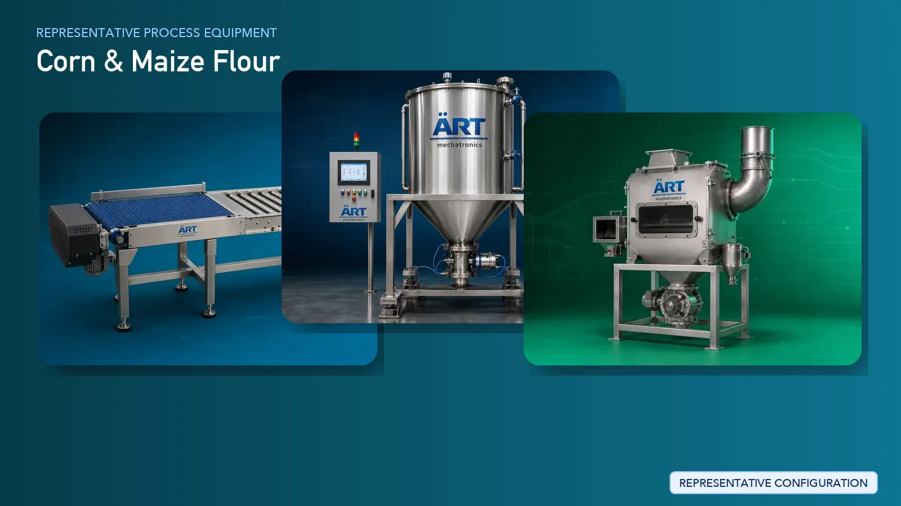

Corn Flour / Maize Flour Processing Plant & Machinery Solutions
Corn (maize) flour processing is a major segment in the global food and agro-processing industry, producing products such as maize flour, corn flour, grits, and bran. These products are widely used in snack manufacturing, bakery, extrusion processing, and industrial applications.

About Corn & Maize Flour processing
ART Mechatronics provides complete turnkey solutions for maize processing plants, offering advanced systems for cleaning, degermination, milling, grading, and packaging. Our solutions are designed for high-capacity continuous production, consistent product quality, and efficient industrial operations.
Complete Corn / Maize Process Flow
Maize grains are received, stored, and fed into the processing system.
Ensures efficient bulk handling.
Maize is cleaned to remove dust, stones, and foreign materials.
Ensures:
- Product purity
- Protection of downstream equipment
Maize is conditioned to prepare it for degermination and milling.
Ensures efficient processing and better yield.
Germ is separated from the maize kernel.
Produces:
- Germ (used for oil extraction)
- Endosperm (used for flour)
Improves:
- Flour quality
- Shelf life
Maize is ground into flour or grits.
Produces:
- Corn flour
- Maize flour
- Grits
Ground product is separated into different grades.
Ensures:
- Uniform particle size
- Multiple product outputs
Fine dust generated during milling is controlled. Systems Used:
Ensures:
- Clean working environment
- Product recovery
Final inspection ensures consistent product quality.
Finished maize flour is packed into bags or retail packs.
Suitable for:
- Bulk supply
- Retail distribution
Machinery Required for Corn Flour Plant
- Material Handling Systems
- Storage Silos
- Pre Cleaner
- Destoner
- Magnetic Separator
- Air Classifier
- Conditioning System
- Degerminator
- Roller Mill / Grinder
- Plansifter / Vibro Sifter
- Dust Collection System
- Blending System
- Packaging Machines
Turnkey Maize Processing Plant Solutions
ART Mechatronics offers complete turnkey solutions for maize processing plants, including:
- Process design & plant layout
- Cleaning and conditioning systems
- Degermination and milling systems
- Separation and grading systems
- Dust control & air handling systems
- Automation & control panels
- Packaging line integration
- Installation & commissioning
- After-sales support
We customize solutions based on:
- Product type (flour, grits, bran)
- Production capacity
- End-use industry (food, feed, industrial)
- Automation level
Why Choose Art Mechatronics
- Expertise in grain and maize processing systems
- High-capacity continuous milling solutions
- Advanced degermination technology
- Efficient dust control systems
- Consistent product quality
- Global export capability
Machinery in a Corn & Maize Flour plant
Where it's used
Get pricing & specs for the Corn & Maize Flour plant
Share the product, target capacity, current process and plant location. These details help our engineers discuss the right machine or line configuration.
One partner, from design to start-up
ART Mechatronics designs, manufactures, installs and commissions your Corn & Maize Flour solution with regional presence in India, UAE and Thailand.